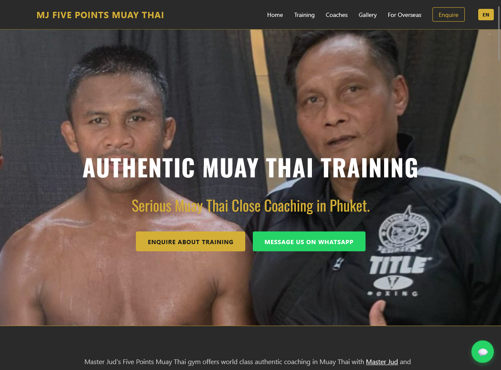
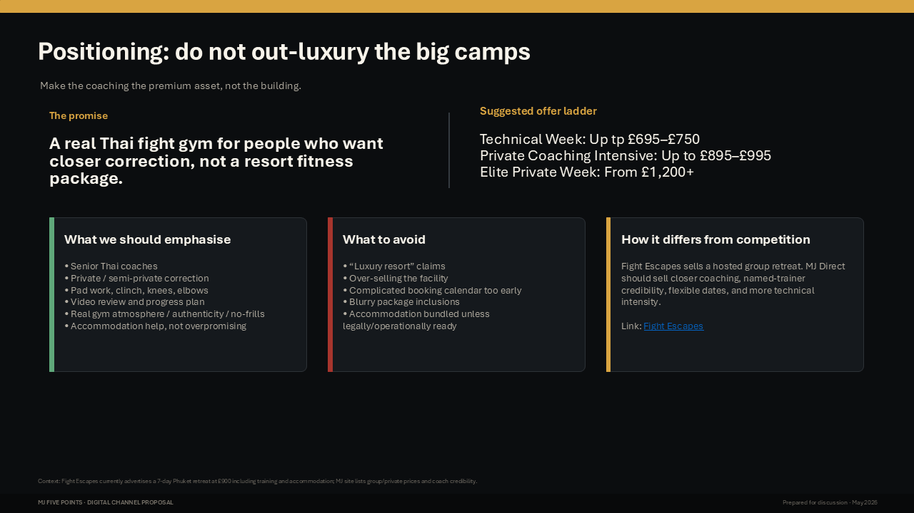
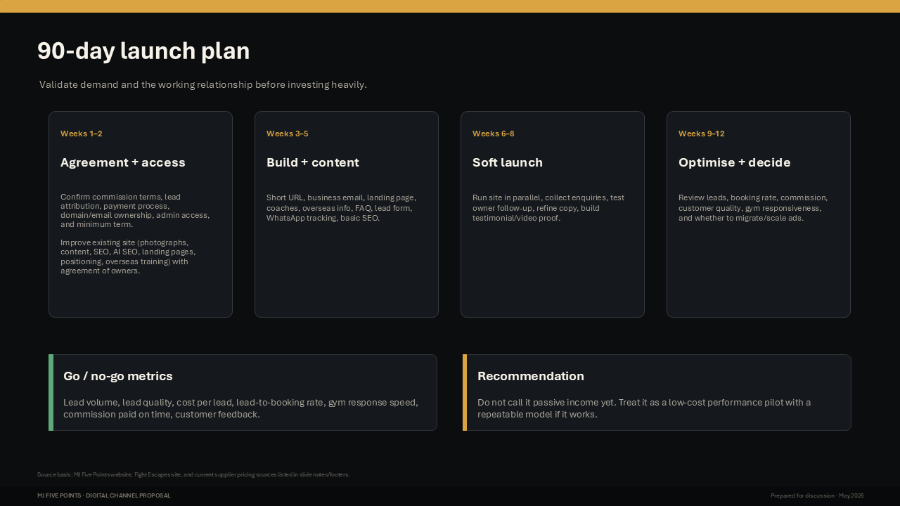
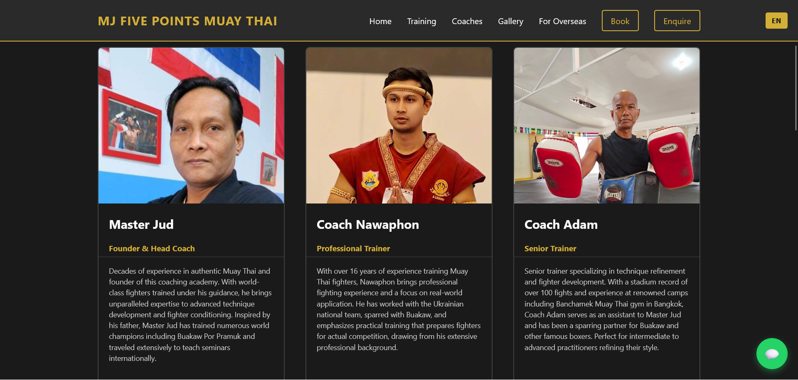
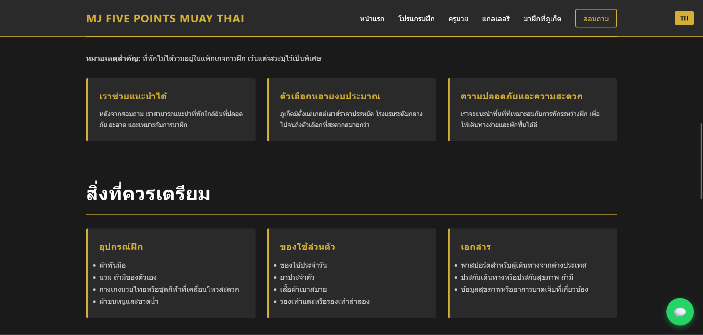

Product Design - User Research - Market Research - Product Management - Information Architecture - Sitemaps - Prototypes - HTML/CSS/JS - Analytics - Roadmaps - Responsive Design
Industry: Leisure, Travel and Tourism
How could a Muay Thai gym make it easier for visitors around the world to understand what was available and book training online? I looked beyond the website itself to understand not just the vision the business wanted but also the mechanics: open hours, capacity, pricing, payment flows and technical capability of gym staff.
This was a product rather than simply a website. The experience needed to work for customers, many of whom would be visiting Thailand and using their phones, while also fitting the way the business actually operates. Decisions about availability, payments and confirmation had practical implications for both the user experience and the gym's day-to-day workload.
I owned this product as well as designing it: defining the initial scope, exploring the booking model, prioritising what needed to be built first and identifying where automation would add value — and where a simpler manual process would be perfectly adequate. The project has subsequently developed from product and interaction design into a working application, with design, implementation and product decisions evolving together.

Outcomes: I had enough direction to begin investigating platforms, payment systems that aligned with business workflow, business needs and vision and timescales.
This work is more than designing screens. I've been shaping the product itself: defining what should be built, prioritising features, resolving business rules and balancing the ideal customer experience against the practical needs of the gym.
That has included making decisions around session availability, booking capacity, payments, confirmations, likely customer communications channels and how much of the process genuinely needs to be automated and how much needs manual work. Where a simple operational process is sufficient, I have avoided adding unnecessary technical complexity which is a key business requirement from the gym owners.
Design, business requirements and implementation are considered together rather than as separate activities, all defined in a product roadmap.

Outcomes: A more refined direction in terms of tangibles (a prototype with assets, a clearer picture of the market and workable understanding of how the business worked and what they wanted to achieve).
I am currently taking the product from early flows and interface concepts through to a working prototype where we can test workflows, online bookings and payments. Feedback from stakeholders and some basic usability tests will feed back into iterative design.
AI-assisted development has helped compress that cycle considerably. I can move quickly from an idea to a functioning interaction, test whether it works, refine it and continue building without the usual hand-off between design and development. This is a very short cycle now so movement is quick.

This also works as an exercise in end-to-end product delivery: product decisions, interaction design and implementation are all evolving together rather than as separate stages. AI has allowed a fast cycle and enables me to assume more responsibility in creating the product.

Outcomes: I provided a direction for functionality and design.
The next stage is to align the business owners with the latest version and get formal agreement on business workflows. That means refining availability and capacity rules, integrating payments, tightening the confirmation flow and testing the experience with real users and business stakeholders.
Once live, analytics and booking behaviour will provide a much stronger basis for prioritisation. Rather than treating launch as the end point, the aim is to use real usage data to identify friction, improve conversion and decide which parts of the service are worth automating further.
AI will monitor and analyse performance upon launch. Multiple sources will be used (GA4, GSC, Yandex Metrika, YWT and Bing Webmaster Tools and possibly PageSpeed Insights, along with automated scanning via a custom-built tool). Yandex Metrika's session playback tools along with scroll and click heatmaps were particularly useful for another client and I expect to use them here too for UX insights.
The project will therefore continue to evolve as both a product and an operational system, with future development driven by evidence rather than assumptions.